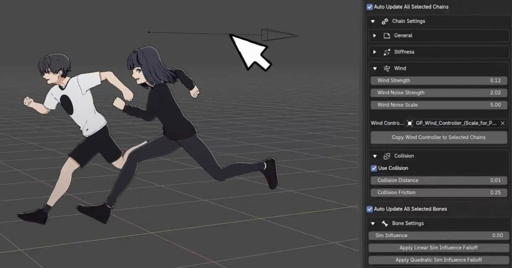
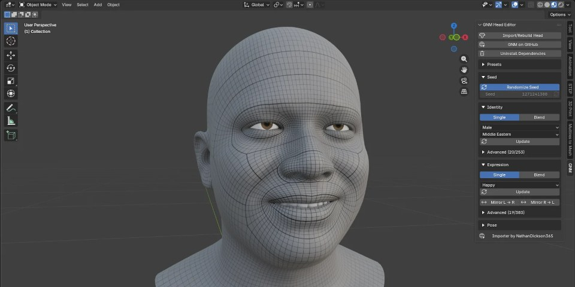
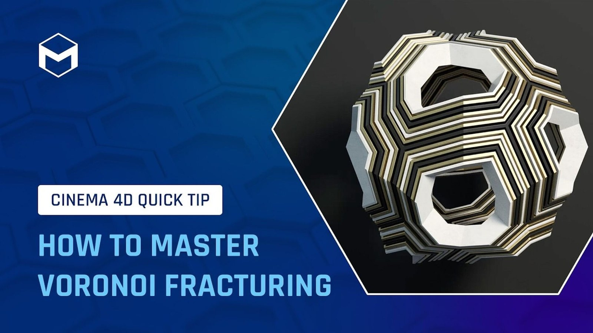
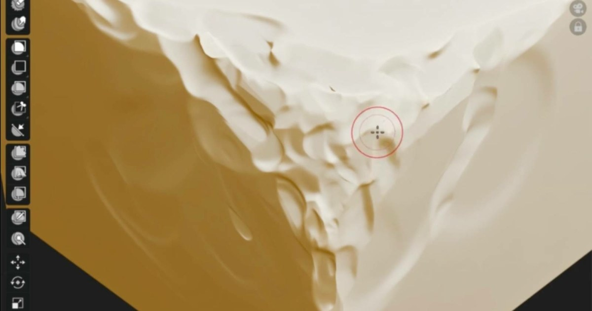

#01 · substance
Substance 3D Painter 12.2：直接在模型上繪製 Cage 距離並即時重烘焙
Adobe 說明 Painter 12.2 的烘焙重整：使用者可在模型上以繪製與多邊形填滿操作調整 Cage 投射距離，搭配 Skew 修正、自動重烘焙、材質組反白與透明排序改善。
 SOURCE PREVIEW
· Local visual evidence · 點圖開啟原始來源
SOURCE PREVIEW
· Local visual evidence · 點圖開啟原始來源
Substance ★★★★★
完整分析
烘焙修正技術流程
Skew 控制烘焙射線方向，Cage 則控制射線距離；兩者把 Painter 的繪製系統帶入烘焙模式，並以隱藏圖層堆疊保存修正資訊，再由自動重烘焙提供近即時預覽。
資產迭代製作影響
Cage 可利用重新設計的多邊形填滿工具，為個別物件加入相對偏移，不必離開 Painter 另做 Cage；材質組反白也能從清單或視窗反查複雜多材質網格。
節點與透明限制待驗證
Imager 以外的本次訪談重點仍是操作流程，沒有量化烘焙速度；透明排序只針對即時視窗改善，且團隊明言部分選項仍會在後續小版更新持續補足。
BRIEF｜來源已驗證；證據深度較有限，完整分析會明確區分已知資訊與待驗證事項。
來源 ↗
#02 · blender
Marionette：拖曳手腳或髖部完成全身姿勢，並直接寫入既有 FK 關鍵幀
Blender 外掛 Marionette 讓動畫師拖曳手、腳或髖部帶動全身，支援多種人形 Rig，直接在原骨架寫入標準 FK 關鍵幀，並提供 Motion Trail、平滑與滑步檢測。
 SOURCE PREVIEW
· Local visual evidence · 點圖開啟原始來源
SOURCE PREVIEW
· Local visual evidence · 點圖開啟原始來源
Blender ★★★★☆
完整分析
全身姿勢技術流程
Marionette 不替角色新增專用骨架，而是讀取既有人形 Rig，求解拖曳控制點帶動的全身動作，最後把結果寫成可復原的標準 FK 關鍵幀。
動畫修整製作影響
使用者可重塑 Motion Trail、用筆刷平滑軌跡，並偵測腳底滑動與關節跳動；工具也提供手指姿勢預設，適合由 Blocking 延伸到動作拋光。
支援範圍與限制待驗證
來源列出 Rigify、Auto-Rig Pro、Mixamo、Character Creator、UE5 Mannequin 與 3ds Max Biped 等骨架，且完全離線；但不支援臉部表情，並要求 Blender 5.0 以上。
BRIEF｜來源已驗證；證據深度較有限，完整分析會明確區分已知資訊與待驗證事項。
來源 ↗
#03 · blender
CL Sculpt Assistant：Blender 雕刻捷徑、關節彎曲與指定區域皺褶工具
CL Sculpt Assistant 把遮罩、顯示切換與筆刷集中到快捷鍵、圓餅選單和視窗面板，另提供關節彎曲、深度限制，以及沿手繪導引線生成局部皺褶的功能。
 SOURCE PREVIEW
· Local visual evidence · 點圖開啟原始來源
SOURCE PREVIEW
· Local visual evidence · 點圖開啟原始來源
Blender ★★★★☆
完整分析
雕刻輔助技術流程
外掛把常用遮罩、可見性與筆刷操作放進快捷鍵和圓餅選單；Base Point Bend 用於彎曲關節，Depth Limit 則限制增加或移除幾何的深度。
局部皺褶製作影響
使用者可先畫出導引線，再在指定位置生成乾淨皺褶；開發者將它定位為遊戲模型的快速局部造型，而不是取代 Marvelous Designer 的寫實布料模擬。
版本與功能限制待驗證
來源記載早期存取版已可購買並要求 Blender 4.5 以上，但沒有列出複雜模型的效能、拓樸要求或最終版時程，正式製作前仍需用實際網格測試。
BRIEF｜來源已驗證；證據深度較有限，完整分析會明確區分已知資訊與待驗證事項。
來源 ↗
#04 · blender
Flattice：依相機壓平角色局部，降低動漫臉極端視角的透視變形
DillonGoo Studios 的 Flattice 可為臉、胸口或全身建立 Lattice，依相機方向壓平幾何並自動建立權重、驅動與骨架父子關係，模擬較長焦段的正交觀感。
 SOURCE PREVIEW
· Local visual evidence · 點圖開啟原始來源
SOURCE PREVIEW
· Local visual evidence · 點圖開啟原始來源
Blender ★★★★☆
完整分析
相機變形技術流程
使用者把三維游標放在目標區域並執行 Add Flattice，工具會建立 Lattice、依游標位置產生頂點群組權重、加入相機指向驅動，並自動掛接到角色 Rig。
鏡頭造型製作影響
生成後仍可調整參數，針對每顆鏡頭微調臉部或身體的壓平程度；它以相機相對變形減少極端角度的透視誇張，讓動漫角色輪廓更接近二維設計。
實作替代與版本限制
開發者指出相同效果現在也可用 Geometry Nodes 建立，Flattice 的價值在於預先封裝流程；來源列出 Blender 3.6–5.1 與 Goo Engine 3.6–4.4 相容。
BRIEF｜來源已驗證；證據深度較有限，完整分析會明確區分已知資訊與待驗證事項。
來源 ↗
#06 · blender
MetaWrap：在 Blender 轉換雕刻、掃描與 AI 角色為完整 MetaHuman
MetaWrap 套件可把頭部或全身模型包覆到 MetaHuman 拓樸、轉移皮膚貼圖，再以 MetaSculpt 修復細節與皺紋、MetaGroom 編修毛髮，最後送入 Unreal Engine。
 SOURCE PREVIEW
· Local visual evidence · 點圖開啟原始來源
SOURCE PREVIEW
· Local visual evidence · 點圖開啟原始來源
Blender ★★★★☆
完整分析
拓樸轉換技術流程
工具可自動把雕刻、掃描或 AI 模型對應到標準 MetaHuman 拓樸，也能由使用者指定兩邊 Landmarks 引導；完成後把來源皮膚轉到 MetaHuman UV，並以 Smart Paint 清理小瑕疵。
細節毛髮製作影響
MetaSculpt 可從掃描恢復皮膚褶皺或雕刻表情皺紋圖；MetaGroom 則可在 Blender 與 Unreal Engine 間轉移 Groom，或混合既有毛髮再編輯。
平台與相容限制
來源列出的需求為 Blender 5.0 以上、Unreal Engine 5.6 以上且只支援 Windows；雖宣稱一鍵送入引擎，仍未提供大型角色或複雜 Groom 的效能測試。
BRIEF｜來源已驗證；證據深度較有限，完整分析會明確區分已知資訊與待驗證事項。
來源 ↗
#07 · other-dcc
Arnold 7.5.4：互動式 Imager 後製、獨立 Rim Light 與跨 DCC 加速視窗
Arnold 7.5.4 加入可用一般著色節點即時組合後製的 Imager、獨立 Rim Light 節點，並把加速視窗擴展到 3ds Max、Cinema 4D、Houdini、Katana 與 Maya。
 SOURCE PREVIEW
· Local visual evidence · 點圖開啟原始來源
SOURCE PREVIEW
· Local visual evidence · 點圖開啟原始來源
其他 DCC ★★★★☆
完整分析
算圖節點技術流程
Imager 讀取著色網路並即時寫入 Beauty，可用標準 Arnold 與輸出數值的 OSL 節點做扭曲、色彩映射和拼貼；輸出 Closure 的 OpenPBR Surface 類節點不適用。
跨軟體製作影響
Rim Light 可把 Toon 的邊緣光拆成獨立可疊加元件；3ds Max 與 Cinema 4D 首次能直接在原生視窗以 CPU 或 GPU 算圖，Maya 互動視窗也加入動態模糊和快取播放支援。
效能與平台限制
官方稱十萬實例場景的互動延遲降到三分之一，但增加間接光樣本會提高計算時間；GPU 算圖只支援 Windows、Linux 並要求相容 NVIDIA 顯示卡。
BRIEF｜來源已驗證；證據深度較有限，完整分析會明確區分已知資訊與待驗證事項。
來源 ↗
#11 · other-dcc
Cinema 4D 2026.4 內建 MCP：用 AI 指令串接建模、Rig、UV 與算圖佇列
Cinema 4D 2026.4 內建 MCP Server，可讓 Claude、ChatGPT 或 Codex 以自然語言組合指令，操作建模、Rig、UV、場景管理與多通道算圖，結果保留為可編輯原生場景。
 SOURCE PREVIEW
· Local visual evidence · 點圖開啟原始來源
SOURCE PREVIEW
· Local visual evidence · 點圖開啟原始來源
其他 DCC ★★★☆☆
完整分析
AI 操作技術流程
MCP Server 預設關閉，需在偏好設定啟用並更新指定客戶端後重啟；使用者還能分別授權工具群與 Python 執行權限，處理結果保留為 Cinema 4D 原生資料。
批次與工具製作影響
案例以 CSV 產生超過一百組三維文字 Take 並加入算圖佇列，也能把特定多邊形加工步驟整理成可套用其他模型的專用工具。
自動化誤差與人工限制
建築案例初次生成仍有細節錯誤，角色 Rig 的肩關節位置也需用圖片指示修正；VFX 案例中的車輛資產選擇與配置仍由美術手動完成。
BRIEF｜來源已驗證；證據深度較有限，完整分析會明確區分已知資訊與待驗證事項。
來源 ↗
#12 · other-dcc
CC4D 工具 1.1：雙向交換 Cinema 4D 角色、姿勢與臉部動畫
CC4D Tools 1.1 新增 CC4D Link，可在 Cinema 4D 與 Character Creator 4／5、iClone 8 間傳送角色、姿勢、身體與臉部動畫、Morph 和網格修改。
 SOURCE PREVIEW
· Local visual evidence · 點圖開啟原始來源
SOURCE PREVIEW
· Local visual evidence · 點圖開啟原始來源
其他 DCC ★★★☆☆
完整分析
角色交換技術流程
送出端與 Link Receiver 可免手動匯出交換角色與動作，傳入動畫可套用 Joint 或控制 Rig，再用 CC4D Bake 把結果烘焙到各控制器。
Rig 與材質製作影響
套件能匯入 FBX、整理 Morph、建立 FK／IK 控制與表情 Rig，也能依 FBX／JSON 設定 Redshift 材質和表情皺紋，並重新導向外部動作。
骨架與版本限制
從 Cascadeur 等外部來源匯入姿勢或動作時，來源與目標必須有一致的 Joint 階層與比例；本文列出的支援範圍是 Cinema 4D 2023 至 2026。
BRIEF｜來源已驗證；證據深度較有限，完整分析會明確區分已知資訊與待驗證事項。
來源 ↗
#14 · other-dcc
Arnold 7.5.2：匯入與重打光 3D Gaussian Splat，新增八段 Toon 明暗
Arnold 7.5.2 可從 PLY 或點陣列載入 3D Gaussian Splat，透過專用 Shader 以場景燈重打光；同版加入 Tone Zones、Shader to RGBA 與 USD 26.03 初步支援。
 SOURCE PREVIEW
· Local visual evidence · 點圖開啟原始來源
SOURCE PREVIEW
· Local visual evidence · 點圖開啟原始來源
其他 DCC ★★★☆☆
完整分析
3DGS 算圖技術流程
資料可由 Points 節點讀取 PLY，或直接以每點陣列匯入；Gaussian Splat Shader 能調整原資料光照，甚至完全改由 Arnold 場景燈重新照明。
NPR 製作影響
Tone Zones 把 RGB 光照切成最多八段，每段可獨立染色或輸出 AOV；Shader to RGBA 將表面光照轉為 RGBA，再送入 Ramp 建立卡通明暗。
格式與平台限制
USD Gaussian Splat 僅標示初步支援；官方稱 PLY 載入快約 1.2 至 1.4 倍，但 GPU 算圖仍只支援 Windows、Linux 且需要相容 NVIDIA 顯示卡。
BRIEF｜來源已驗證；證據深度較有限，完整分析會明確區分已知資訊與待驗證事項。
來源 ↗
#15 · other-dcc
Arnold 7.5.3：三種 BSDF 組合 Toon，GPU 首像素最高快四倍
Arnold 7.5.3 新增 Diffuse、Fuzz、Specular BSDF，可接 Shader to RGBA 建立 NPR；同版改善 GPU 與互動算圖，並擴充 Flow Render 的轉台、貼圖烘焙和長任務。
 SOURCE CARD
· Generated source card · 點圖開啟原始來源
SOURCE CARD
· Generated source card · 點圖開啟原始來源
其他 DCC ★★★☆☆
完整分析
NPR 節點技術流程
Diffuse、Fuzz 與 Specular 三種 BSDF 可分別描述漫反射、絨毛與高光，再接入 Shader to RGBA，把光照結果轉成適合分段與著色的資料。
互動算圖製作影響
官方測試稱 GPU 首像素快一至四倍、整體快百分之一至二十；密集網格在互動編輯時改採增量更新，典型頂點與變形操作快二至二點五倍。
雲端與測試限制
Flow Render 可把多幀合為單一任務、最長執行二十四小時，並自動建立轉台或烘焙貼圖；效能數字來自特定測試場景，不能直接外推所有專案。
BRIEF｜來源已驗證；證據深度較有限，完整分析會明確區分已知資訊與待驗證事項。
來源 ↗
#17 · blender
歷史參考｜2026 年 Goo Physics 以骨架模擬卡通頭髮、布料與軟體晃動
2026 年 4 月資料介紹 Goo Physics：以骨架為核心，為 Blender 角色建立彈跳、柔軟和黏稠的風格化模擬，完成自動運動後仍能由動畫師調整結果。

SOURCE PREVIEW
· Local visual evidence · 點圖開啟原始來源
Blender ★★★☆☆
完整分析
風格模擬技術流程
Goo Physics 透過客製 Geometry Nodes 配置驅動骨架運動；長骨鏈布料則以 Blender 原生 Cloth 為基礎，可用於馬尾、辮子或特定尾巴。
角色動畫製作影響
工具同時涵蓋頭髮、布料、道具與軟體效果，並提供預設縮短設定時間；自動模擬後仍允許動畫師修改運動，保留藝術導向控制。
歷史資訊與版本限制
本文僅說明 2026 年 4 月發表時的功能，沒有 Blender 相容版本、穩定性、效能或與正式 Rig 衝突的測試，因此不能直接推定目前狀態。
BRIEF｜來源已驗證；證據深度較有限，完整分析會明確區分已知資訊與待驗證事項。
來源 ↗
#18 · blender
Google 開源 GNM Head：253 組頭型參數、383 組表情控制與 3ds Max 整合
Google 的 GNM Head 是以約五千人多視角掃描建立的參數化頭部模型，提供 253 組身分形狀與 383 組表情參數，並已有 Blender、Houdini、3ds Max 整合。

SOURCE PREVIEW
· Local visual evidence · 點圖開啟原始來源
Blender ★★★☆☆
完整分析
參數頭模技術流程
模型把皮膚、眼睛、牙齒與舌頭分開控制；253 組身分參數包含頭型、牙齒與眼球，383 組表情參數則分配到雙眼、下臉、舌頭和虹膜。
DCC 整合製作影響
GNM Head 本體偏向供開發者建立工具；Blender 外掛提供滑桿即時調頭，Houdini 已有內部 HDA，更新後也提供免費 3ds Max Generator。
資料代表性限制
研究資料約五千人並以二十二台高解析相機擷取，但只使用二元性別和四個廣泛人口群組，Google 明言不能完整代表性別認同與全球族群多樣性。
BRIEF｜來源已驗證；證據深度較有限，完整分析會明確區分已知資訊與待驗證事項。
來源 ↗
#19 · other-dcc
Cinema 4D Voronoi：用 Spline、Matrix 與粒子建立可動畫的程序式分割
Maxon 教學說明 Voronoi 分割由相鄰來源點中間形成切面，並示範用 Spline、文字、Polygon、Matrix 與粒子取代預設點生成器，製作程序式圖樣。

SOURCE PREVIEW
· Local visual evidence · 點圖開啟原始來源
其他 DCC ★★★☆☆
完整分析
分割來源技術流程
基本 Point Generator 會在相鄰點中間建立切面；改用 Spline 或文字輪廓作來源，可沿曲線密集產點，Polygon 的所有頂點也能成為分割基準。
圖樣動畫製作影響
Matrix 的蜂巢、放射與網格模式可建立六角、披薩切片或等距磁磚；動畫來源物件的位置與旋轉，分割圖樣會即時跟隨變化。
粒子顏色限制與修正
粒子通過物件時能持續改變分割，但每幀碎片數量變動會讓 Colorize Fragments 隨機閃爍；教學建議關閉該選項避免色彩 Flicker。
BRIEF｜來源已驗證；證據深度較有限，完整分析會明確區分已知資訊與待驗證事項。
來源 ↗
#20 · blender
歷史參考｜2025 年 Blender 4.5 Vulkan 後端改善高面數雕刻互動
2025 年示範顯示 Blender 4.5 啟用 Vulkan 後可更流暢處理高面數雕刻；測試硬體為 RTX 4080 與 Ryzen 9 7950X，影片以兩倍速播放，表現仍未達 ZBrush。

SOURCE PREVIEW
· Local visual evidence · 點圖開啟原始來源
Blender ★★☆☆☆
完整分析
Vulkan 啟用技術流程
Vulkan 在 Blender 4.5 並非預設後端，需到偏好設定的系統頁切換 Backend、儲存設定並重新啟動，才能使用示範中的新圖形後端。
高面數雕刻製作影響
來源將 Vulkan 的主要收益描述為高面數場景與雕刻互動改善，並以數百萬面模型操作為示範；相較一年前版本，Blender 可處理更重的雕刻工作。
歷史硬體與比較限制
示範使用 RTX 4080、Ryzen 9 7950X，畫面還以兩倍速呈現；作者明言仍不及 ZBrush，因此不能把影片觀感當成其他硬體的即時效能保證。
BRIEF｜來源已驗證；證據深度較有限，完整分析會明確區分已知資訊與待驗證事項。
來源 ↗